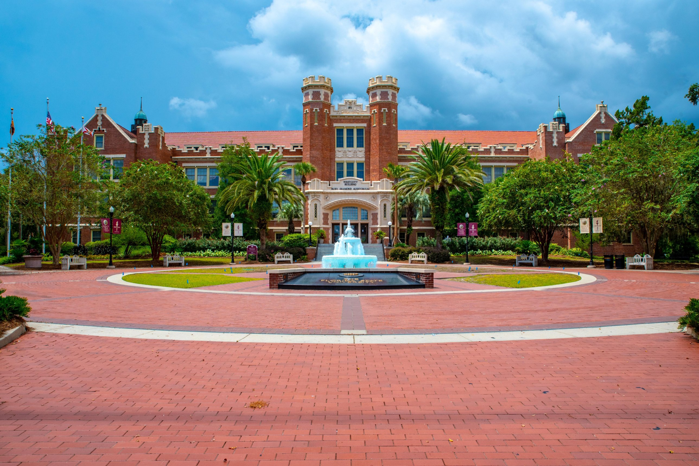

Tallahassee, Florida
Local information
The workshop takes place April 16–18, 2027, at Florida State University in Tallahassee, Florida.


Conference location
The conference takes place at Florida State University in Tallahassee, Florida. The photograph above shows the Westcott Building and Fountain on the FSU campus.
Travel and lodging
For questions about travel, lodging, and parking, please contact the organizers. Only limited funding is available to support participation. If you need support to attend, please contact the organizers as well.
Accessibility
To request an accommodation, please contact the organizers.